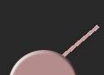

Tuna+ is a little suite of helpful desktop tools to assist musicians. Currently, it comes with an instrument tuner and a metronome. More tools will be added soon! Enjoy :)
... Too low, tune up |
|
... Right on, you're in tune! |
|
|  | ... Too high, tune down |
The tuner uses the default audio input device set in your OS sound device setting(See setup mode).
The sound output will come out of the currently set output device
(See setup mode).
For the tuner to work well, make sure you're getting high enough audio input. The top left button will take you to the sound device dialog where you can find the input volume control (like the one shown below).
If you switch to a differnt sound device, restart the application.
This software is distributed under the MIT license. You can use it or modify it freely. You can redistribute this program freely as long as the License notice - the LICENSE.txt file in the root folder - is accompanied with the program.
(c)2017 Hiro Morozumi.